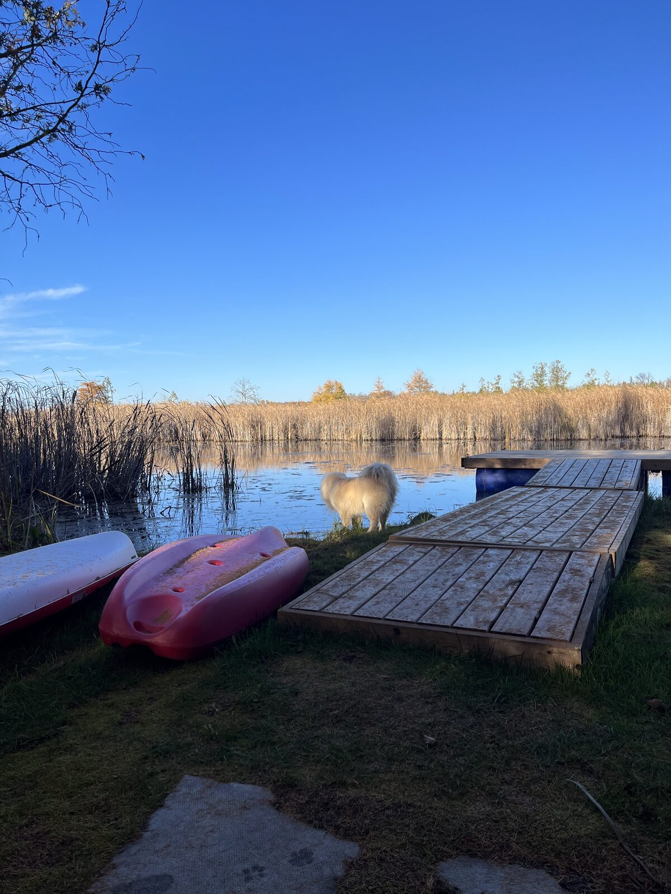
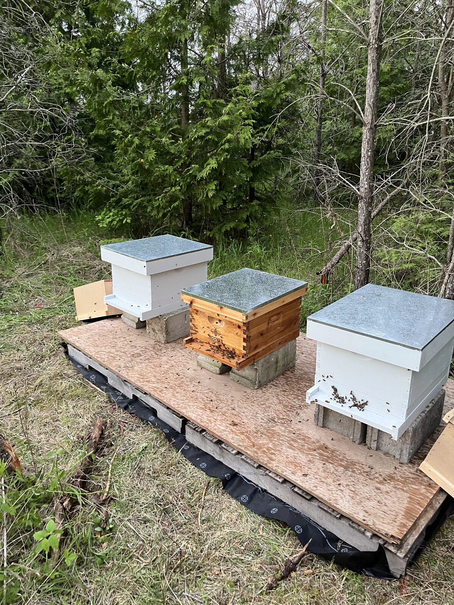
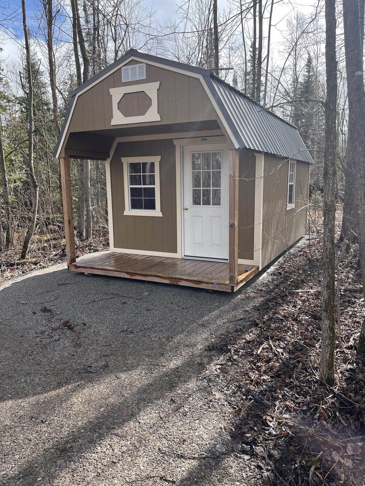
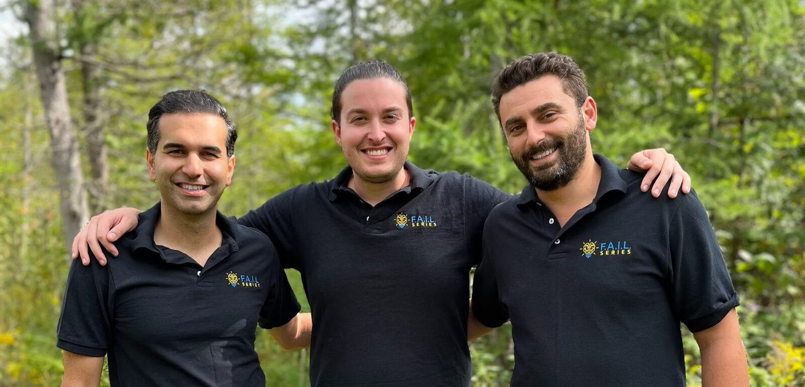
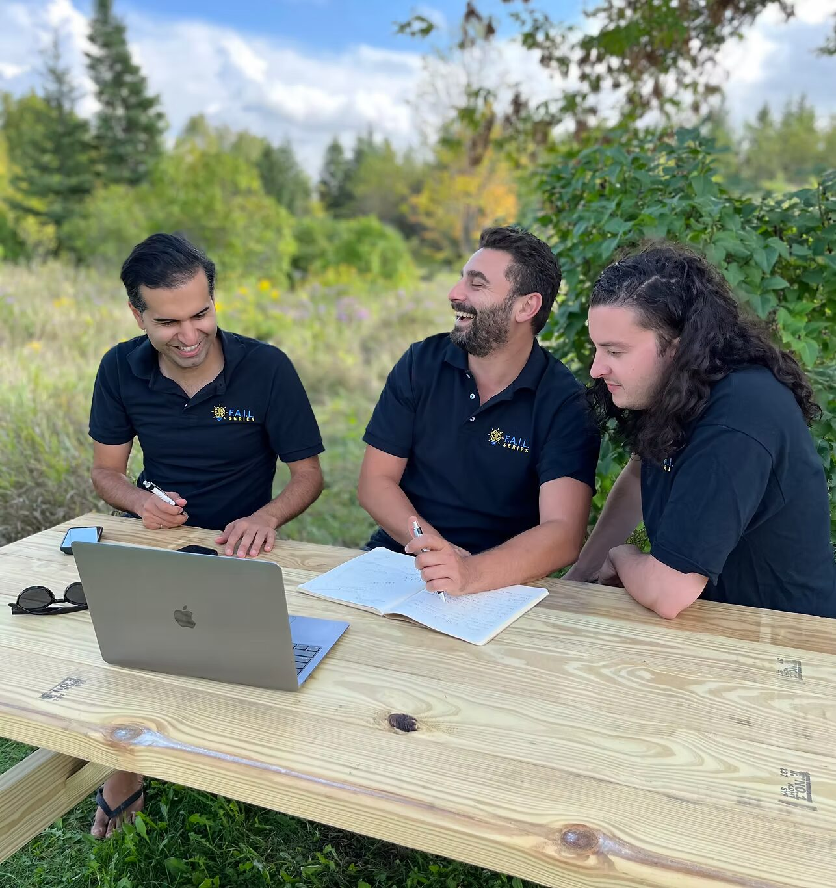

Follow Us on Social


Disconnect from the busy world and reconnect with nature, yourself, and your community.
OUR PROJECTSIn a world that often feels rushed, overstimulating, and disconnected, many of us are left feeling like something is missing. We go through our routines, but deep down, we crave a deeper connection — to the earth, to each other, and to ourselves.
At Straight Fin Farms, we believe that nature holds the key to rediscovering that connection. Our community is a place where you can slow down, breathe, and find balance again.
Explore a curated collection of projects we have under way, and see how you can be part of the growing community of likeminded people that believe in a better future, re-connected to the land and nature.

Our flagship permaculture project — transforming 34 acres into a thriving, balanced ecosystem that supports community, food production, and wildlife.

Growing nutrient-dense food using regenerative practices — from raised bed gardens and orchards to beekeeping and mushroom cultivation.

Simple, sustainable tiny homes nestled into the natural landscape — a new model for intentional community living off the grid.

Reflect, Imagine, Story, Execute — our personal development program helping individuals rediscover their authentic selves through nature immersion.
Straight Fin Farms is a 34-acre private retreat with 500 feet of your own waterfront, just 8 minutes from downtown Bobcaygeon and 1.5 hours from Toronto. The farmhouse sleeps 16+ guests across 7 bedrooms and 4.5 bathrooms — designed for multi-family getaways, milestone weekends, and groups who want the whole property to themselves.
Kayaks, pedal boat, outdoor hot tub, fireplace, BBQ, forest trails & more. Calendar synced with Airbnb for real-time availability.
BOOK DIRECT & SAVE 15% or book on AirbnbStraight Fin Farms sits just 8 minutes from downtown Bobcaygeon — one of the Kawarthas' most charming small towns. Your retreat is private and secluded, but everything you need is a short drive away.
Restaurants, craft shops, ice cream at Kawartha Dairy, and the famous Thursday night concerts on the main street bridge all summer long.
Sandy beach access practically next door. Plus 500 ft of private waterfront right on the property with kayaks and a pedal boat.
The Trent-Severn Waterway and Pigeon Lake are right there. Launch a boat, fish, or watch the locks in action from downtown.
A straight shot up the 115 from the GTA. Far enough to feel like a different world, close enough for a long weekend.
Unwind under the stars in the outdoor hot tub after a day on the water or exploring the farm trails.
Summer bonfires, fall harvest colours, winter snowshoeing, spring planting season. Every visit is a different experience.
Small-group, hands-on permaculture courses on the farm — choose a 3-day intensive or a 7-day immersive. All meals included, with accommodation options from BYO tent to private farmhouse rooms. First cohorts run August & September 2026.
Weekend Immersion · Certificate Included
Full Immersion · Capstone Project · Certificate
Work on real farm projects — gardens, orchards, mushroom beds, compost systems, and beehives
Stay on the property in farmhouse rooms, bunkies, or bell tent glamping
Earn your Permaculture Fundamentals certificate upon completion of the course
Enjoy meals prepared with ingredients grown right here on Straight Fin Farms
A life of fulfillment can only happen when you have purpose in what you do and can bring your community around that purpose. Having started F.A.I.L. Series (career coaching) with my partner Mayar to help people reflect on their lives, find their authentic selves, and discover their purpose — facilitating our first cohort guided my own evolution and led me to purchase this farm.
Here I can balance myself, balance nature by building a biodiverse farm employing permaculture practices, have a space to enjoy quality time with my loved ones — all of you — and help raise our collective consciousness around agricultural practices.
What important truth is nobody talking about? We have roughly 60 harvests left before our monoculture farming system collapses. In that same period, we'll add 3 billion humans to a planet of 8 billion. A third of the earth is covered with monoculture farms that will no longer be able to feed us as their soil is devoid of life. We mask the problem with ever-increasing synthetic fertilizers and pesticides — pesticides that nearly triple in quantity every 20 years just to maintain current yields.
Three generations ago, half the population worked the land. Today, less than one percent of Canada is in agriculture — a massive loss in skills and our inner wisdom. The good news? There is a better way, and the movement has already started. We've been doing it for over 10,000 years before World War 2. We need to Balance Nature — let natural ecosystems deal with pests, use permaculture practices, and move from monoculture to biodiverse so we have richness in our soil and a more profitable, tastier yield.
Our mission is to raise awareness about this truth and take concrete action. We're documenting every step, celebrating every milestone with our tribe, and providing a blueprint for others who want to follow. Disconnect to connect.

Have questions about visiting the farm, our permaculture course, or joining the community? We'd love to hear from you.